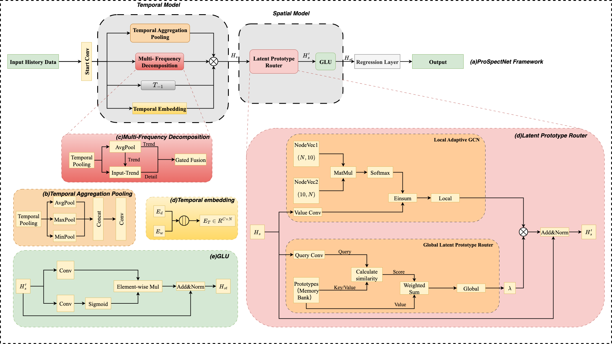

IJCNN 2026 SS32 · Accepted Paper
A Prototype-Guided Spectral-Temporal Framework for Efficient Traffic Forecasting
◆Special Session 32 · Deep Neural Networks and Generative AI for Multi-Agent Smart Vehicle Perceptron, Learning, Automation and Optimization
The Core Tension
Transformer Complexity
Inference Speed Gap
Memory Overhead
High-performance models demand quadratic attention.
Transformers like STAEformer and GMAN achieve superior accuracy through dense spatio-temporal attention — at the cost of O(N²) complexity. This quadratic bottleneck makes them impractical for large-scale, real-time deployment on city-wide networks.
Lightweight models lose the signal.
Efficient alternatives rely on statistical pooling — averaging away high-frequency details and global spatial context. They trade away the very information that makes long-range forecasting accurate.
ProSpectNet
Innovation 1
MFD replaces standard pooling with explicit frequency disentanglement. A gated fusion mechanism separates traffic series into trend and detail components — preserving critical high-frequency signals that naive pooling destroys. No frequency aliasing. No information loss.
Innovation 2
LPR captures global spatial dependencies through a shared memory bank of learnable prototypes — a differentiable relaxation of Soft K-Means clustering. Routing complexity: O(NK) instead of O(N²). Global context without the quadratic tax.
Key formula · Latent Prototype Router
Aglobal = softmax( Q · PT / √d ) → Hglobal = Aglobal · P
N-to-K attention · K prototypes · linear O(NK) complexity
Model Architecture

Temporal
Temporal Aggregation Pooling aggregates multi-scale features. MFD decomposes the signal into trend and detail via gated fusion, feeding clean temporal embeddings into the spatial model.
Spatial
Local Adaptive GCN captures neighborhood topology. LPR routes information through K learnable prototypes for global semantic context — O(NK) instead of O(N²).
Gating
Gated Linear Unit (GLU) modulates feature flow with sigmoid-activated gating. Add & Norm residual connections stabilize training throughout the stack.
Experimental Results
| Model | PEMS03 | PEMS04 | PEMS07 | PEMS08 | ||||||||
|---|---|---|---|---|---|---|---|---|---|---|---|---|
| MAE | RMSE | MAPE | MAE | RMSE | MAPE | MAE | RMSE | MAPE | MAE | RMSE | MAPE | |
| STGCN | 17.55 | 30.42 | 17.34% | 21.16 | 34.89 | 13.83% | 21.89 | 35.38 | 9.28% | 17.50 | 27.09 | 11.29% |
| DCRNN | 17.99 | 30.31 | 18.34% | 21.22 | 33.44 | 14.17% | 23.34 | 36.55 | 10.45% | 16.82 | 26.24 | 10.92% |
| AGCRN | 15.98 | 28.25 | 15.23% | 19.83 | 32.26 | 12.97% | 21.05 | 34.83 | 9.35% | 15.95 | 25.22 | 10.09% |
| PDFormer | 14.78 | 25.35 | 14.88% | 18.67 | 30.63 | 12.01% | 19.83 | 32.87 | 8.52% | 14.65 | 23.71 | 9.53% |
| STAEformer | 14.15 | 24.28 | 14.05% | 18.10 | 29.83 | 11.51% | 19.33 | 32.96 | 8.42% | 13.46 | 22.43 | 8.95% |
| TimeMixer | 14.62 | 25.10 | 14.95% | 18.55 | 30.42 | 12.05% | 20.10 | 33.50 | 8.65% | 14.25 | 23.88 | 9.62% |
| STG-Mamba | 14.28 | 24.55 | 14.20% | 18.05 | 29.70 | 11.60% | 19.25 | 32.80 | 8.35% | 13.62 | 22.75 | 9.05% |
| ProSpectNet | 14.76 | 23.91 | 15.32% | 17.92 | 29.43 | 12.35% | 18.87 | 31.93 | 8.10% | 13.50 | 22.54 | 9.38% |
The Efficiency Payoff
Faster inference than STAEformer
Less memory footprint
ProSpectNet sits on the Pareto frontier — matching the accuracy of heavyweight Transformers (<0.3% MAPE gap vs. STAEformer on PEMS08) while delivering 14× lower inference latency and 88% memory savings. Real-time, city-scale deployment is now feasible.
Horizon 60 · 5-Hour Forecast
| Model | PEMS04 | PEMS08 | ||||
|---|---|---|---|---|---|---|
| MAE | RMSE | MAPE | MAE | RMSE | MAPE | |
| STGCN | 26.43 | 40.80 | 19.45% | 24.88 | 37.88 | 17.19% |
| DCRNN | 25.39 | 39.92 | 18.10% | 23.12 | 35.22 | 16.35% |
| AGCRN | 25.72 | 41.42 | 17.66% | 24.73 | 38.79 | 17.15% |
| PDFormer | 23.64 | 37.73 | 15.91% | 19.52 | 31.40 | 14.12% |
| STAEformer | 24.47 | 39.47 | 15.58% | 18.82 | 30.76 | 13.83% |
| TimeMixer | 22.10 | 36.50 | 15.20% | 18.90 | 30.50 | 13.95% |
| STG-Mamba | 21.05 | 34.20 | 14.60% | 16.85 | 27.90 | 12.10% |
| ProSpectNet | 20.44 | 33.67 | 14.30% | 16.12 | 26.86 | 11.33% |
Ablation Study
| Dataset | Variant | MAE | RMSE | MAPE |
|---|---|---|---|---|
| PEMS03 | ProSpectNet (Full) | 14.49 | 23.48 | 15.23% |
| PEMS03 | w/o MFD (AvgPool) | 14.59 | 23.70 | 16.13% |
| PEMS03 | w/o LPR (Local only) | 14.59 | 23.50 | 16.03% |
| PEMS04 | ProSpectNet (Full) | 18.04 | 29.64 | 12.40% |
| PEMS04 | w/o MFD (AvgPool) | 18.09 | 29.64 | 12.45% |
| PEMS04 | w/o LPR (Local only) | 18.08 | 29.64 | 12.42% |
| PEMS08 | ProSpectNet (Full) | 13.62 | 23.21 | 9.23% |
| PEMS08 | w/o MFD (AvgPool) | 13.76 | 22.78 | 9.11% |
| PEMS08 | w/o LPR (Local only) | 13.74 | 23.05 | 9.23% |